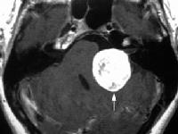
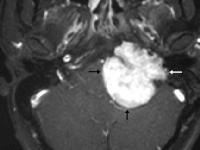
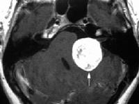
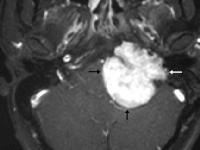

+ Khối u góc tiểu não - cầu não

Hình: Nhát cắt trên MRI cho thấy khối u góc cầu tiểu não
đây là một trường hợp u dây thần kinh số VIII (mũi tên trắng)

Hình: U thần kinh VIII ở góc cầu tiểu não qua nhát cắt dứng ngang
Cerebellopontine angle tumor
* Định nghĩa:
+ Khối u góc tiểu não - cầu não

Hình: Nhát cắt trên MRI cho thấy khối u góc cầu tiểu não
đây là một trường hợp u dây thần kinh số VIII (mũi tên trắng)
Hình: U thần kinh VIII ở góc cầu tiểu não qua nhát cắt dứng ngang